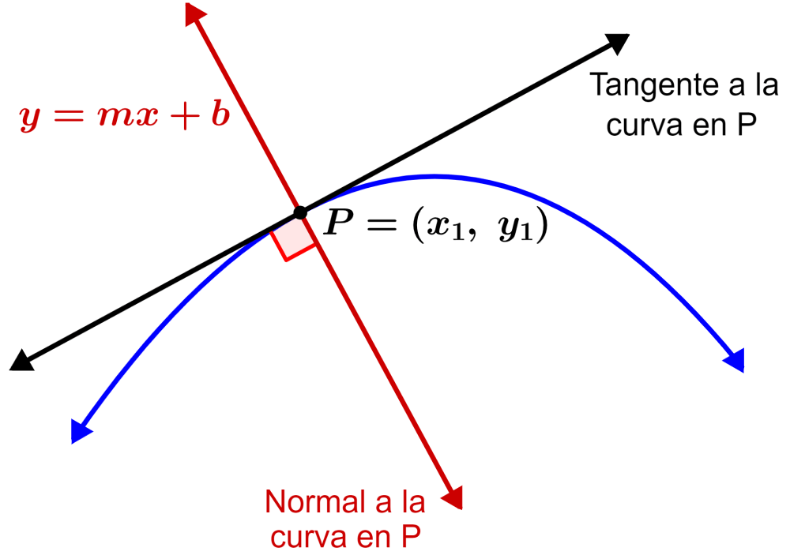

APLICACIONES GEOMETRICAS DE LAS DERIVADAS

La pendiente de una recta tangente se define como
\[m = \tan(\alpha)\]
Cuando \(\alpha \to 0\), se cumple que \[m = \tan(\alpha) = \frac{\Delta y}{\Delta x}\]
Es decir, la pendiente es el cociente entre el incremento en \(y\) y el incremento en \(x\).
De esta manera se obtiene la ecuación de la recta tangente en un punto \((x_0, y_0)\):
\[y - y_0 = m(x - x_0)\]
Recta tangente:
\[\quad y - y_0 = f'(x_0)\,(x - x_0)\]
Recta normal:
\[\quad y - y_0 = -\frac{1}{f'(x_0)}\,(x - x_0)\]
DERIVADAS DE FUNCIONES TRIGONOMETRICAS
Las derivadas de funciones trigonométricas surgen aplicando reglas primarias + la regla de la cadena.
Primero se obtienen las formas simples (sin x, cos x, tan x) y después se generalizan a funciones compuestas (sin(f(x)), cos(f(x)), ...).
1. Seno de x:
\[\quad \frac{d}{dx}\big(\sin x\big) = \cos x\]
2. Seno de una función:
\[\quad \frac{d}{dx}\big(\sin(f(x))\big) = \cos(f(x)) \cdot f'(x)\]
3. Coseno de x:
\[\quad \frac{d}{dx}\big(\cos x\big) = -\sin x\]
4. Coseno de una función:
\[\quad \frac{d}{dx}\big(\cos(f(x))\big) = -\sin(f(x)) \cdot f'(x)\]
5. Tangente de x:
\[\quad \frac{d}{dx}\big(\tan x\big) = \sec^2 x\]
6. Tangente de una función:
\[\quad \frac{d}{dx}\big(\tan(f(x))\big) = \sec^2(f(x)) \cdot f'(x)\]
7. Cotangente de x:
\[\quad \frac{d}{dx}\big(\cot x\big) = -\csc^2 x\]
8. Cotangente de una función:
\[\quad \frac{d}{dx}\big(\cot(f(x))\big) = -\csc^2(f(x)) \cdot f'(x)\]
9. Secante de x:
\[\quad \frac{d}{dx}\big(\sec x\big) = \sec x \cdot \tan x\]
10. Secante de una función:
\[\quad \frac{d}{dx}\big(\sec(f(x))\big) = \sec(f(x)) \cdot \tan(f(x)) \cdot f'(x)\]
11. Cosecante de x:
\[\quad \frac{d}{dx}\big(\csc x\big) = -\csc x \cdot \cot x\]
12. Cosecante de una función:
\[\quad \frac{d}{dx}\big(\csc(f(x))\big) = -\csc(f(x)) \cdot \cot(f(x)) \cdot f'(x)\]
DERIVADAS PRIMARIAS
El concepto de límite en cálculo describe el valor al que se aproxima una función cuando la variable independiente se acerca a un punto.
En trigonometría, hay dos límites fundamentales:
1) \[\lim_{\alpha \to 0} \frac{\sin \alpha}{\alpha} = 1\]
Este límite es esencial porque permite definir la derivada de sin 𝑥 en 𝑥 = 0.
2) \[\lim_{h \to 0} \frac{\cos h - 1}{h} = 0\]
Este aparece al calcular la derivada de cos x en x = 0.
Ambos son la base para demostrar derivadas de funcions primarias y trigonometricas cuando su comportamiento se acerca a 0.
Las derivadas primarias son reglas fundamentales que permiten calcular la derivada de funciones más complejas a partir de expresiones simples.
Son la base del cálculo diferencial y se aplican en combinación para derivar prácticamente cualquier función.
1. Derivada de una constante:
\[\quad \frac{d}{dx}(c) = 0\]
2. Derivada de una variable:
\[\quad \frac{d}{dx}(x) = 1\]
3. Derivada de suma y diferencia:
\[\quad \frac{d}{dx}(u + v - w) = \frac{du}{dx} + \frac{dv}{dx} - \frac{dw}{dx}\]
4. Derivada por una constante por función:
\[\quad \frac{d}{dx}(c \cdot v) = c \cdot \frac{dv}{dx}\]
5. Derivada por una potencia:
\[\quad \frac{d}{dx}(u^n) = n \, u^{\,n-1} \cdot \frac{du}{dx}\]
6. Derivada por un producto:
\[\quad \frac{d}{dx}(uv) = u \cdot \frac{dv}{dx} + v \cdot \frac{du}{dx}\]
7. Derivada por un cociente:
\[\quad \frac{d}{dx}\!\left(\frac{u}{v}\right) = \frac{v \cdot \frac{du}{dx} - u \cdot \frac{dv}{dx}}{v^2}\]
8. Derivada por cociente con constante:
\[\quad \frac{d}{dx}\!\left(\frac{u}{c}\right) = \frac{1}{c} \cdot \frac{du}{dx}\]
9. Derivada Raiz cuadrada de una función:
\[\quad \frac{d}{dx}(\sqrt{u}) = \frac{1}{2\sqrt{u}} \cdot \frac{du}{dx}\]
10. Derivada de raiz cuadrada de x:
\[\quad \frac{d}{dx}(\sqrt{x}) = \frac{1}{2\sqrt{x}}\]
11. Regla de cadena:
\[\quad \frac{dy}{dx} = \frac{dy}{du} \cdot \frac{du}{dx}\]